Technical Art, UI/UX Design, Pixel Art, Game Design, Production.
Adventure of Samsara
Adventure of Samsara is a metroidvania developed by Ilex Games and published by Atari, launched on 4th September of 2025. It is available on PC (via Steam and GOG) and consoles (PS4, PS5, XBOX One, XBOX Series X/S, Nintendo Switch 1 and Nintendo Switch 2). It has 94% positive reviews on Steam, 84 metascore and 9.5 userscore on metacritic.
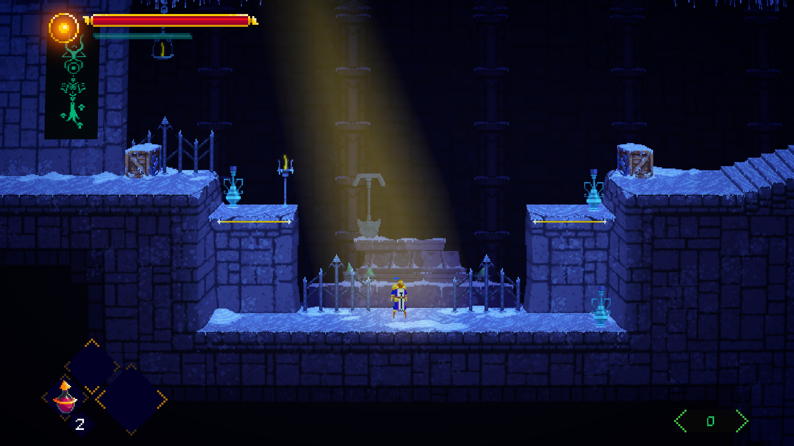
I joined the project in 2022 when there was already a prototype in place and it was named Tower of Samsara, long before Atari got into it. Since then my involvement only grew to a point that I can say I gave 100% of myself and touched almost every aspect, object or scene of the project.
As the main Technical Artist and UI/UX designer, among my contributions are the designing and implementation of the user interface, the implementation of enemies, interactables, props, cutscenes and bosses, the setup of scenes and levels, the implementation of the level design pipeline alongside the tilesets pixel art and direct contribution to game design decisions. Everything I did was under Art and Technical direction guidelines, most of the time bridging the needs of the two while finding common ground with solutions. More details of the process can be found below.
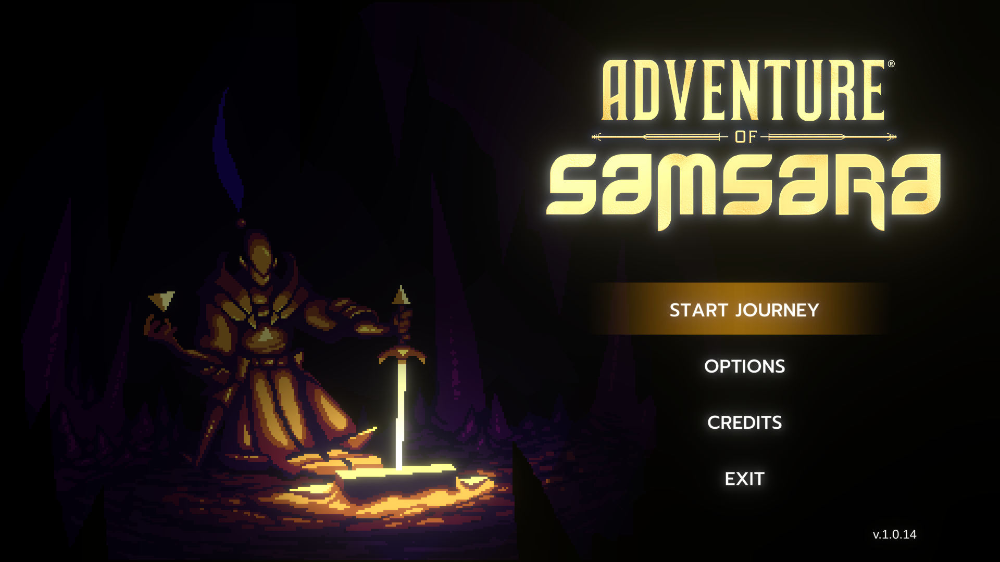
UI Design
As a metroidvania the UX flow was quite simple, also, the game was fixed on a 16:9 ratio so screen resolution would not interfere on player vision on the levels, that made the UI design process more focused on aesthetics and implementation rather than complex flows or multi-resolution responsiveness.
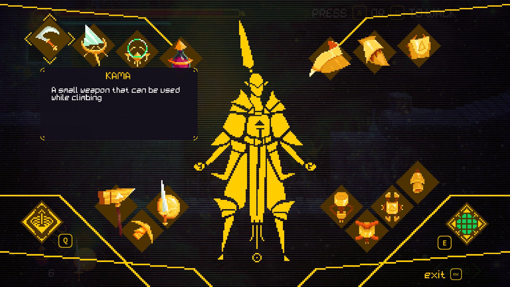
I've designed the buttons, panels, HUD, menus and choose typography in constant back and forth with art direction to reach an aesthetic consistent with the 'sword and planet' game theme and fantasy sci-fi style.
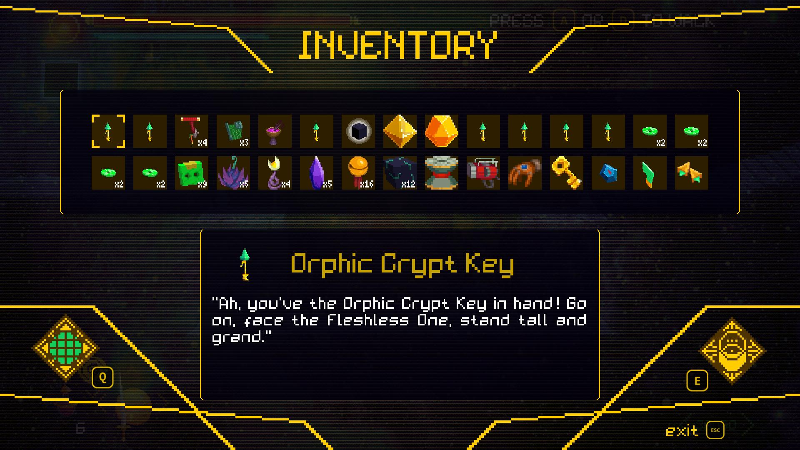
I've organized the prefab hierarchy and implemented the whole interface using Unity Canvas and C# with the guidance of our Tech Lead. I've also animated the interactions and states using Unity animation tools.
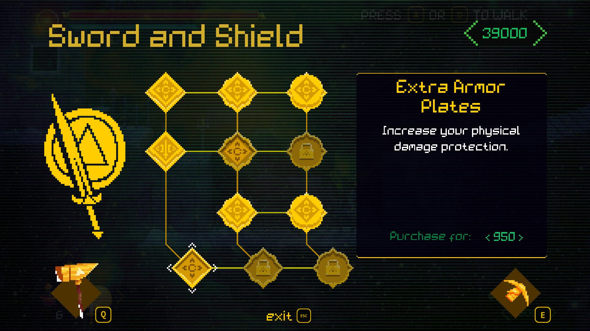
I've designed the buttons, panels, HUD, menus and choose typography in constant back and forth with art direction to reach an aesthetic consistent with the 'sword and planet' game theme and fantasy sci-fi style.
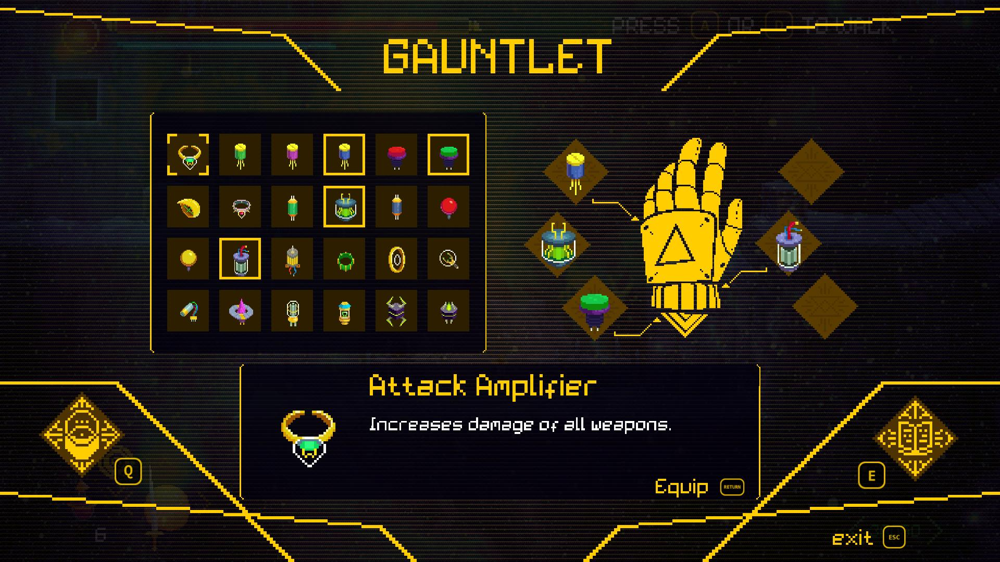
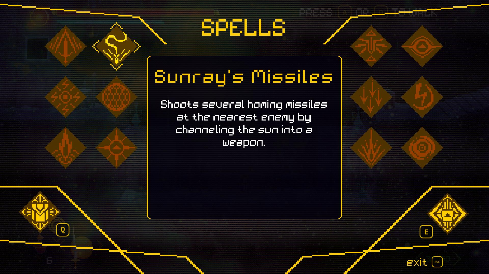
Lighting, Colorization and Optimization
One of the first contributions of mine to the project was handling a problem we had in which in order for the Art Director to control the coloring and lighting of the project, huge transparent PNGs were used on top of the levels, which got a heavy project really fast. Also, the saturation of the assets were really high to meet the intended aesthetic, making it hard to change the mood in between levels.
I suggested a de-saturation of the assets so we could have more control inside unity, the huge PNGs were then substituted for a combination of Unity 2D lights and Post-processing, making the project way lighter and performant. The only big PNGs still being used were the fogs, in which I suggested using a scrolling texture shader instead of animators.
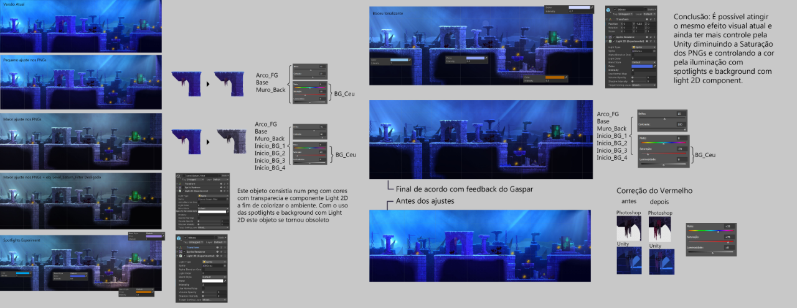
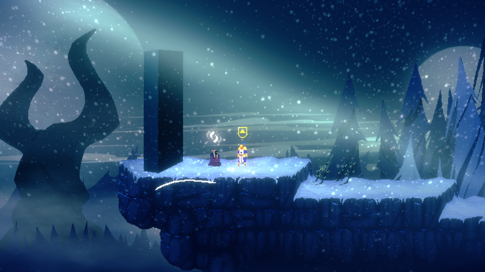
Long after that, when we were QA testing the game for the consoles, we had some FPS drops on switch. After some profiling I could find the issues on some levels that were overusing fogs and on some UI components and proceeded to fix them.
Level design pipeline
When I started working in the project one of the issues was that building and iterating levels was a slow and error prone process, the art direction required that the levels were art based as opposed to tiled to avoid being repetitive, so every level was done in Photoshop and then assembled in Unity and every collider was positioned by hand.
At this point Atari had already entered the project and we could not afford to lose visual quality, which was something that got their attention and was a selling point. The solution we've found was using the software Tiled which could handle complex logic to build levels using custom rules of tiling and an auto-mapping feature.
After a month of R&D, polishing the rules and tileset, coming back and forth to meet art direction standards, I was able to build a system that was fast to iterate level design and reached a visual quality as good as the previous pipeline without looking too repetitive. Also, I drew all the tilesets with the amazing guidance of the Art Director.
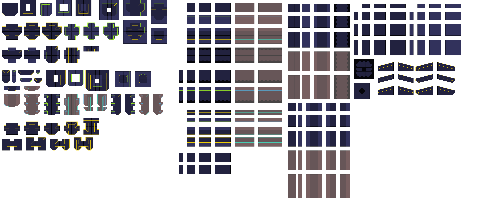
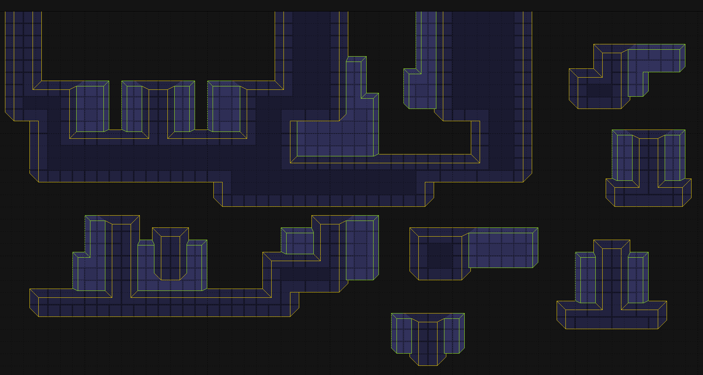
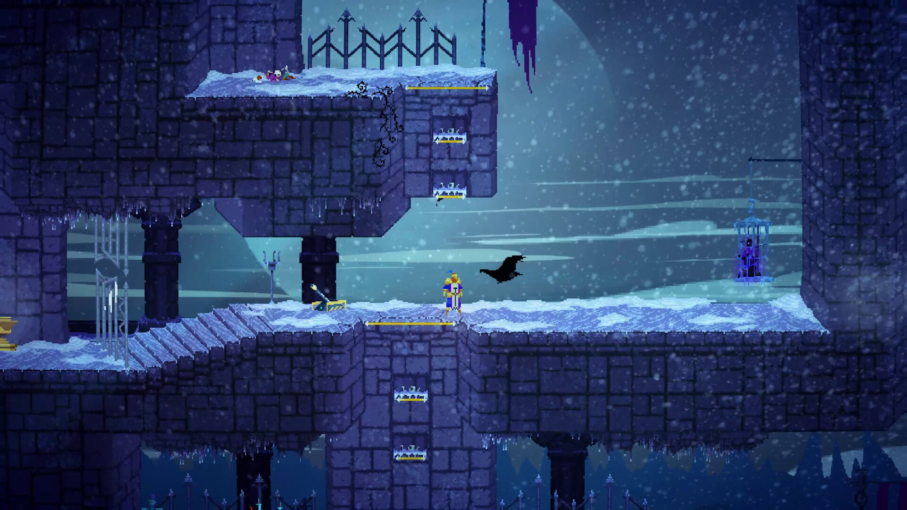
As of now a Level Designer can iterate the levels using 3 simple colored blocks and generate a working level with a click of a button. Changing to different tilesets, or skins as we call it, is as easy and fast. I've continued supporting levels designers and made some changes along the way to contemplate their needs. I've also iterated and made some Level Designs myself.
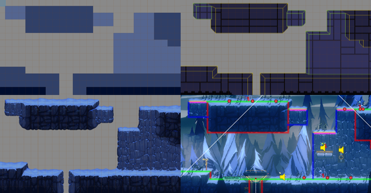
Enemies, Bosses and interactables
I was responsible to implement all the assets done by our pixel artist in Aseprite into Unity, setting up the prefabs and inserting them on the scenes. In our pipeline we used a version of MetaSprite Ase importer that was improved by our Tech Lead, so I was responsible to configure the Aseprite files, import them into the engine and setup the Animator state machine. I've also configured and iterated enemies behavior using our behavior tree.
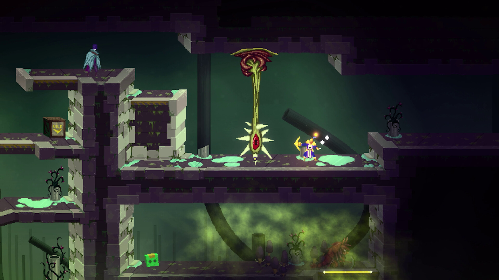
I've completely implemented two bosses according to the first game design draft, iterated their behavior and tweaked their numbers.
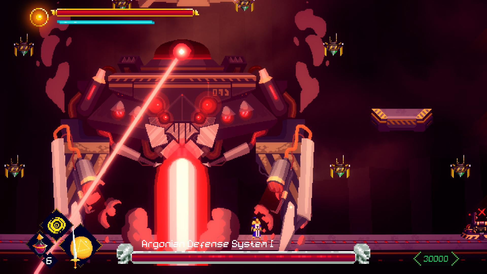
I was also responsible to implement the game cutscenes from the lead artist's Aseprite files into the engine using Unity's timeline.
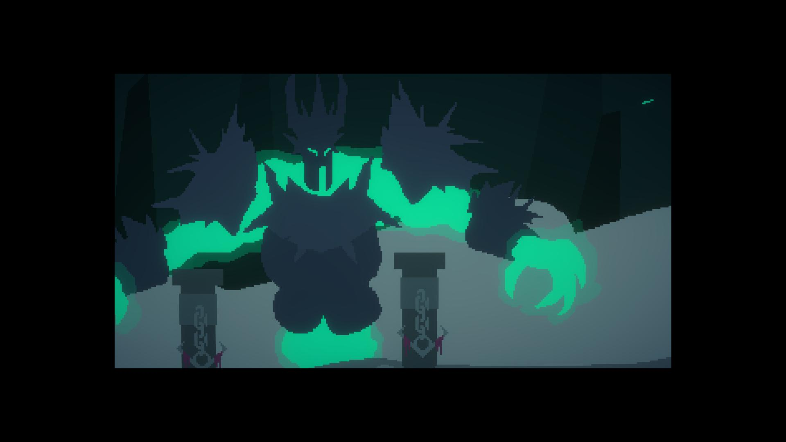
Game Design
All of our game design decisions were made in a horizontal manner where everyone was encouraged to express their opinions and suggest solutions, in that regard there are plenty of designs that are direct contributions of mine in a way that is hard to point out. Those range from level design, enemies and boss design, interactables design, character controls, skills, spells and so on.
Some of them that I brought to the table and I could point out are the bow weapon's secondary attack, which is a backstep dropping an explosive mine, the hammer's secondary attack, which is a scythe thrown in a parabola, aerial attacks for both of these weapons, the blackroot that must be burnt to unlock paths and the explosive rune spell.
Production, QA and Bugfixing
I was in close contact with Atari in the meetings and used Jira on a daily basis, hearing feedbacks, helping creating and prioritizing tasks according to our schedule. I was also frequently testing the game, identifying bugs and fixing them.
Conclusion
Adventure of Samsara was a project that I loved every second being a part of, I've worked so hard and learned so much about the art and business of making games. I'll definitely carry this game in my hearth for as long as I breathe.
A shout out to my companions at Ilex Games and the folks at Atari. Thanks ya'll!